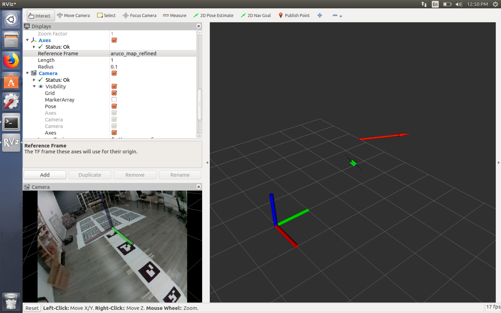
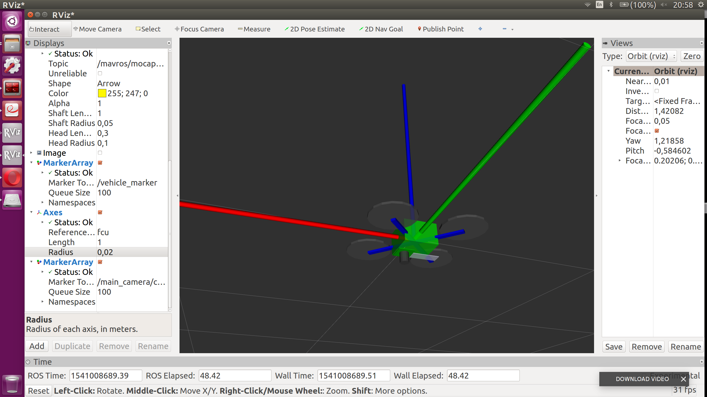
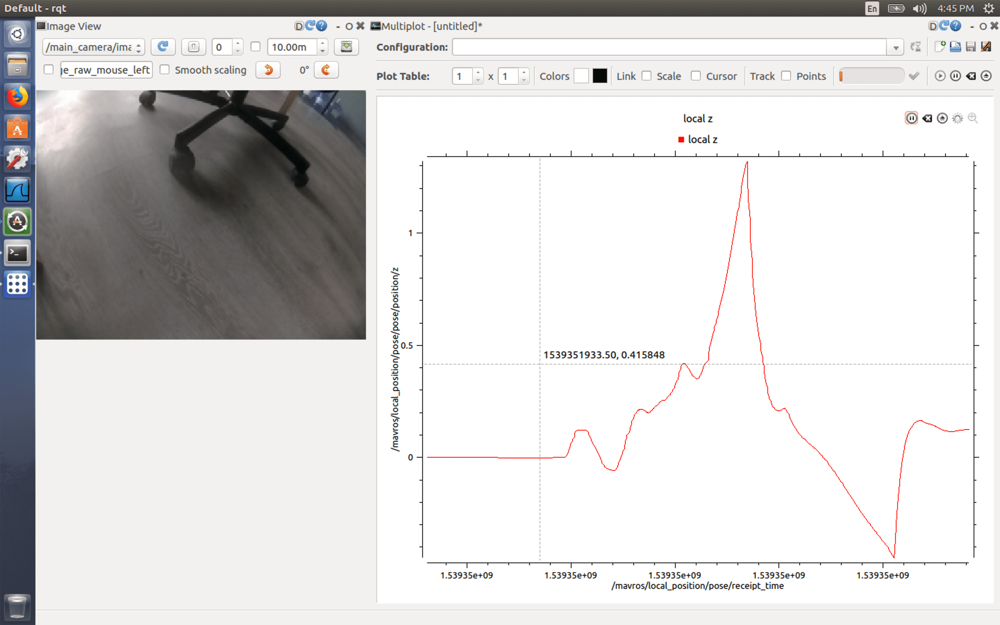

Использование rviz и rqt

Инструмент rviz позволяет в реальном времени визуализировать на 3D-сцене все компоненты робототехнической системы — системы координат, движущиеся части, показания датчиков, изображения с камер.
rqt – это набор GUI для анализа и контроля ROS-систем. Например, rqt_image_view позволяет просматривать топики с изображениями, rqt_multiplot – строить графики по значениям в топиках и т. д.
Для использования rviz и rqt необходим компьютер с ОС Ubuntu Linux (либо виртуальная машина, например Parallels Desktop Lite или VirtualBox).
Подсказка Вы можете можете использовать готовый образ виртуальной машины с инструментами для Техника.
На него необходимо установить пакет ros-noetic-desktop-full или ros-noetic-desktop, используя документацию по установке.
Запуск rviz
Для запуска визуализация состояния Техника в реальном времени, необходимо подключиться к нему по Wi-Fi (technic-xxxx) и запустить rviz, указав соответствующий ROS_MASTER_URI:
ROS_MASTER_URI=http://10.42.0.1:11311 rviz
Заметки В случае использования виртуальной машины для использования rviz и других инструментов может быть необходимо поменять ее сетевую конфигурацию на режим bridge (см. подробности для VMware).
Использование rviz
Визуализация положения коптера
В качестве reference frame рекомендуется установить фрейм map. Для визуализации коптера добавьте визуализационные маркеры из топика /vehicle_markers. Для визуализации камеры коптера добавьте визуализационные маркеры из топика /main_camera/camera_markers.
Результат визуализации коптера и камеры представлен ниже:

Визуализация окружения
Можно просмотреть картинку с дополненной реальностью из топика основной камеры /main_camera/image_raw.
Axis или Grid настроенный на фрейм aruco_map будут визуализировать расположение карты ArUco-меток.
jsk_rviz_plugins
Рекомендуется также установка набора дополнительных полезных плагинов для rviz jsk_rviz_plugins. Это набор позволяет визуализировать топики типа TwistStamped (скорость), CameraInfo, PolygonArray и многое другое. Для установки используйте команду:
sudo apt-get install ros-melodic-jsk-visualization
Запуск инструментов rqt

Для запуска rqt для мониторинга состояния Техника используйте команду:
ROS_MASTER_URI=http://10.42.0.1:11311 rqt
Пример запуск конкретного плагина (rqt_image_view):
ROS_MASTER_URI=http://10.42.0.1:11311 rqt_image_view
Краткое описание полезных rqt-плагинов:
rqt_image_view– просмотр изображений из топиков типаsensor_msgs/Image;rqt_multiplot– построение графиков по данным из произвольным топиков (установка:sudo apt-get install ros-melodic-rqt-multiplot);- Bag – работа с Bag-файлами.